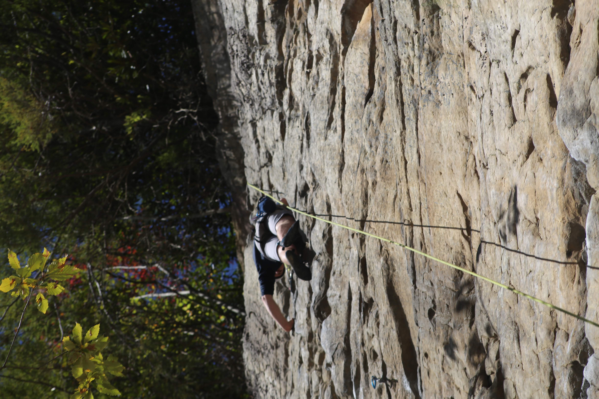
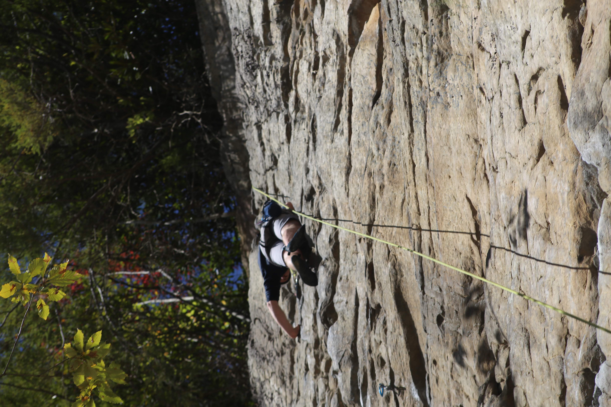

Well, here you are. Trying to learn about me. I'm so lucky! Maybe it's because you're considering me for a job. Maybe you're just here because you met me in a class or an extracirricular and you googled me. Whatever your reason, welcome!
Well, here you are. Trying to learn about me. I'm so lucky! Maybe it's because you're considering me for a job. Maybe you're just here because you met me in a class or an extracirricular and you googled me. Whatever your reason, welcome!
Name:
From:
Discipline:
Degrees:
GPA:
Coursework:
David G. Stanton
Northwest Suburbs of Chicago
Mechanical Engineering
Bachelors of Science in Engineering - Mechanical Engineering, May 2020
Minor in Multidiscplinary Design
Masters of Science in Engineering - Mechanical Engineering, May 2021
3.84 - Undergrad
Masters TBD
Introductory - Thermodynamics, Fluid Mechanics, Mechanics of Materials, Dynamics & Vibration, Controls, Heat Transfer, Design & Manufacturing, Statistics, Behavior of Materials, Electrical Circuits
Intermediate - Advanced Energy Solution, Dynamics and Vibrations, Design and Manufacturing, Composite Materials, Front-end Design
Advanced - Project Management & Consulting, Global Product Design & Manufacturing, Dynamic Systems Modeling, Renewable Energy Fundamentals
Right now, I am a Masters student at the University of Michigan specializing in mechanical design.
UM's ME department offers a program called the Sequential Undergraduate Graduate Studies (SUGS) program
that allows students to complete their masters degree in a single year if they complete their masters immeadiately after completing their undergrad in the department.
This semester I am taking Fundamentals of Renewable Energy (ME 599.004), Modeling of Dynamic Systems (ME 560), Global Design & Manufacturing (ME 587), and Project Management & Consulting (ENTR 560).
These classes will build off the foundational classes of my undergrad and better prepare me to be a competent engineer after I graduate.
The undergraduate curriculum at UM provided me with a foundational understanding of everything from fluid mechanics and heat transfer to design and manufacturing.
All but five of my classes were required courses perscribed by the ME department. For my four technical electives, I chose to take Properties of Advanced Materials (ME 451), Advanced Energy Solutions (ME 433), Dynamics and Vibrations II (ME 440), and Front End Design (ME 499).
To fulfill my only humanity requirement, I took Sustainability and the City (ARCH 357) which looked at how urban planning and architecture could reduce carbon emissions.
In addition to my coursework, I was also recieveing course credit for my work on my design team Spark Electric Racing. The credit I earned from Spark counted towards my Minor in Multidisciplinary Design (MDP) in addition to the valuable experience of working on a complex team.
In the end, I was able to complete my bachelors degree in only three years at Michigan. This was due, in large part, to transfer credits from AP courses I took in high school and placement exams.
These transfer credits enabled me to skip many of the general education requirements and take ME classes my very first semester at UM.
In high school, I took twelve different AP exams which paid off big time in college and graduated at the top of my ~750 person class with an unweight GPA of 4.00.
I was also elected captain of the cross country team even though I never ran a single varsity race. If that doesn't speak to the kind of person I am, I don't know what will.
I picked up climbing during the winter of my second year at school. I initially started because I needed a new sport after I stopped running largely due to repetitive use injuries. It just happened that there is an amazing climbing gym in Ann Arbor and one of my friends wanted to get back into climbing, so we started going regularly. Eventually I progressed into lead climbing and have been able to do a couple outdoor trips. Anyway, here's some sick photos of me from those trips.
 

Who doesn't love carbs right? When I have some spare time in my apartment, I've taken to baking bread. Don't get me wrong, it's not the labor intensive kneaded bread you'd think of. I use this no-knead bread recipe from the New York Times with a few minor alterations based on what I have available to me. I think it was Bill Gates who said that he'd always give the lazy person the hardest job because they'll find an easy way to do it. I'm sure he would've hired who ever came up with this recipe cause it works. It's also super forgiving as long as you remember all the ingredients (yes I forget the salt sometimes). The recipe is also quite resilent to additional ingredients. For example, I've been experimenting with rosemary and honey bread recently and it always turns out okay.